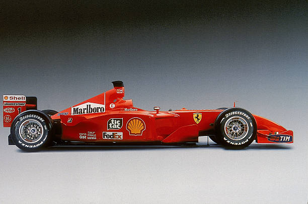

Benvenuti nel mondo Ferrari
La Ferrari è uno dei marchi automobilistici più conosciuti e prestigiosi al mondo.
È famosa per le sue automobili sportive, per la Formula 1 e per la sua grande tradizione nel mondo delle competizioni.
La Ferrari rappresenta prestazioni, tecnologia e passione.
Il simbolo della Ferrari
Il Cavallino Rampante è uno dei simboli più riconoscibili della Ferrari.
Che cos'è Ferrari?
Ferrari è una casa automobilistica italiana specializzata nella produzione di automobili sportive e supercar.
L'azienda è legata anche al mondo del motorsport, soprattutto alla Formula 1.
La Ferrari è conosciuta per la ricerca, l'innovazione e le alte prestazioni.
Le automobili Ferrari

Ferrari ha prodotto nel corso degli anni numerosi modelli famosi.
Alcune automobili sono diventate vere e proprie icone nel mondo dell'automobilismo.
Alcuni famosi modelli Ferrari
- Ferrari 250 GTO
- Ferrari F40
- Ferrari Enzo
- Ferrari 458 Italia
- LaFerrari
Questi modelli rappresentano diverse epoche della storia Ferrari.
Scopri di più sui modelli
La Ferrari 250 GTO rappresenta la tradizione sportiva degli anni Sessanta.
La Ferrari F40 è una delle supercar più famose degli anni Ottanta.
LaFerrari rappresenta invece la tecnologia moderna e ibrida.
Confronto tra alcuni modelli Ferrari
| Modello | Anno | Motore | Categoria |
|---|---|---|---|
| Ferrari 250 GTO | 1962 | V12 | Sportiva |
| Ferrari F40 | 1987 | V8 Biturbo | Supercar |
| LaFerrari | 2013 | V12 + Ibrido | Supercar |
Ferrari e il Motorsport

La Ferrari è strettamente legata alla Formula 1.
La Scuderia Ferrari partecipa al Campionato del Mondo di Formula 1 fin dalle prime stagioni.
La competizione è una parte importante della storia Ferrari.
Tecnologia e innovazione
La tecnologia è una parte fondamentale delle automobili Ferrari.
- Motori V8 e V12
- Aerodinamica
- Elettronica
- Materiali leggeri
- Tecnologia ibrida
Molte tecnologie vengono sviluppate anche grazie all'esperienza della Formula 1.
Curiosità sulla Ferrari
- La Scuderia Ferrari è stata fondata nel 1929.
- La Ferrari è una delle squadre più famose della Formula 1.
- Il colore rosso è uno dei simboli più riconoscibili della Ferrari.
- La Ferrari produce automobili sportive ad alte prestazioni.
- La tecnologia ibrida è presente in alcuni modelli moderni.
Esplora il sito
Scopri tutte le sezioni del nostro mini-sito: